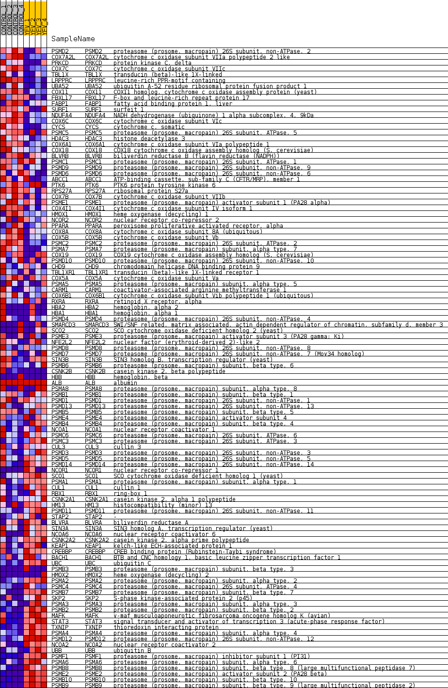
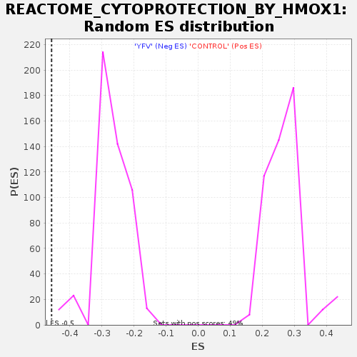

Profile of the Running ES Score & Positions of GeneSet Members on the Rank Ordered List
| Dataset | MATRIZ_GSE99081_collapsed_to_symbols.gsea_CLASE_99081.cls#CONTROL_versus_YFV |
| Phenotype | gsea_CLASE_99081.cls#CONTROL_versus_YFV |
| Upregulated in class | YFV |
| GeneSet | REACTOME_CYTOPROTECTION_BY_HMOX1 |
| Enrichment Score (ES) | -0.4570562 |
| Normalized Enrichment Score (NES) | -1.6905425 |
| Nominal p-value | 0.0 |
| FDR q-value | 0.03459524 |
| FWER p-Value | 0.508 |
| SYMBOL | TITLE | RANK IN GENE LIST | RANK METRIC SCORE | RUNNING ES | CORE ENRICHMENT | |
|---|---|---|---|---|---|---|
| 1 | PSMD2 | proteasome (prosome, macropain) 26S subunit, non-ATPase, 2 | 711 | 0.738 | -0.0269 | No |
| 2 | COX7A2L | cytochrome c oxidase subunit VIIa polypeptide 2 like | 870 | 0.682 | -0.0208 | No |
| 3 | PRKCD | protein kinase C, delta | 992 | 0.646 | -0.0133 | No |
| 4 | COX7C | cytochrome c oxidase subunit VIIc | 1531 | 0.524 | -0.0344 | No |
| 5 | TBL1X | transducin (beta)-like 1X-linked | 1603 | 0.508 | -0.0270 | No |
| 6 | LRPPRC | leucine-rich PPR-motif containing | 1968 | 0.488 | -0.0382 | No |
| 7 | UBA52 | ubiquitin A-52 residue ribosomal protein fusion product 1 | 1969 | 0.488 | -0.0269 | No |
| 8 | COX11 | COX11 homolog, cytochrome c oxidase assembly protein (yeast) | 2022 | 0.480 | -0.0189 | No |
| 9 | FBXL17 | F-box and leucine-rich repeat protein 17 | 2346 | 0.434 | -0.0288 | No |
| 10 | FABP1 | fatty acid binding protein 1, liver | 2404 | 0.425 | -0.0225 | No |
| 11 | SURF1 | surfeit 1 | 2502 | 0.412 | -0.0189 | No |
| 12 | NDUFA4 | NADH dehydrogenase (ubiquinone) 1 alpha subcomplex, 4, 9kDa | 2696 | 0.383 | -0.0220 | No |
| 13 | COX6C | cytochrome c oxidase subunit VIc | 2764 | 0.373 | -0.0174 | No |
| 14 | CYCS | cytochrome c, somatic | 2888 | 0.354 | -0.0168 | No |
| 15 | PSMC5 | proteasome (prosome, macropain) 26S subunit, ATPase, 5 | 3127 | 0.329 | -0.0239 | No |
| 16 | HDAC3 | histone deacetylase 3 | 3341 | 0.305 | -0.0300 | No |
| 17 | COX6A1 | cytochrome c oxidase subunit VIa polypeptide 1 | 3492 | 0.290 | -0.0326 | No |
| 18 | COX18 | COX18 cytochrome c oxidase assembly homolog (S. cerevisiae) | 3500 | 0.289 | -0.0263 | No |
| 19 | BLVRB | biliverdin reductase B (flavin reductase (NADPH)) | 3673 | 0.269 | -0.0307 | No |
| 20 | PSMC1 | proteasome (prosome, macropain) 26S subunit, ATPase, 1 | 3697 | 0.267 | -0.0259 | No |
| 21 | PSMD9 | proteasome (prosome, macropain) 26S subunit, non-ATPase, 9 | 3732 | 0.263 | -0.0219 | No |
| 22 | PSMD6 | proteasome (prosome, macropain) 26S subunit, non-ATPase, 6 | 3986 | 0.243 | -0.0319 | No |
| 23 | ABCC1 | ATP-binding cassette, sub-family C (CFTR/MRP), member 1 | 4082 | 0.237 | -0.0323 | No |
| 24 | PTK6 | PTK6 protein tyrosine kinase 6 | 4098 | 0.235 | -0.0278 | No |
| 25 | RPS27A | ribosomal protein S27a | 4134 | 0.232 | -0.0245 | No |
| 26 | COX7B | cytochrome c oxidase subunit VIIb | 4186 | 0.228 | -0.0224 | No |
| 27 | PSME1 | proteasome (prosome, macropain) activator subunit 1 (PA28 alpha) | 4391 | 0.212 | -0.0301 | No |
| 28 | COX4I1 | cytochrome c oxidase subunit IV isoform 1 | 4443 | 0.208 | -0.0284 | No |
| 29 | HMOX1 | heme oxygenase (decycling) 1 | 4475 | 0.204 | -0.0256 | No |
| 30 | NCOR2 | nuclear receptor co-repressor 2 | 4511 | 0.201 | -0.0231 | No |
| 31 | PPARA | peroxisome proliferative activated receptor, alpha | 4525 | 0.200 | -0.0192 | No |
| 32 | COX8A | cytochrome c oxidase subunit 8A (ubiquitous) | 4616 | 0.190 | -0.0204 | No |
| 33 | COX5B | cytochrome c oxidase subunit Vb | 4775 | 0.177 | -0.0261 | No |
| 34 | PSMC2 | proteasome (prosome, macropain) 26S subunit, ATPase, 2 | 4826 | 0.173 | -0.0252 | No |
| 35 | PSMA7 | proteasome (prosome, macropain) subunit, alpha type, 7 | 5238 | 0.134 | -0.0475 | No |
| 36 | COX19 | COX19 cytochrome c oxidase assembly homolog (S. cerevisiae) | 5273 | 0.132 | -0.0465 | No |
| 37 | PSMD10 | proteasome (prosome, macropain) 26S subunit, non-ATPase, 10 | 5332 | 0.127 | -0.0472 | No |
| 38 | CHD9 | chromodomain helicase DNA binding protein 9 | 5413 | 0.120 | -0.0493 | No |
| 39 | TBL1XR1 | transducin (beta)-like 1X-linked receptor 1 | 5565 | 0.108 | -0.0562 | No |
| 40 | COX5A | cytochrome c oxidase subunit Va | 5611 | 0.105 | -0.0565 | No |
| 41 | PSMA5 | proteasome (prosome, macropain) subunit, alpha type, 5 | 5659 | 0.102 | -0.0571 | No |
| 42 | CARM1 | coactivator-associated arginine methyltransferase 1 | 5894 | 0.085 | -0.0696 | No |
| 43 | COX6B1 | cytochrome c oxidase subunit Vib polypeptide 1 (ubiquitous) | 6064 | 0.071 | -0.0784 | No |
| 44 | RXRA | retinoid X receptor, alpha | 6077 | 0.070 | -0.0776 | No |
| 45 | HBA2 | hemoglobin, alpha 2 | 6208 | 0.059 | -0.0842 | No |
| 46 | HBA1 | hemoglobin, alpha 1 | 6209 | 0.059 | -0.0829 | No |
| 47 | PSMD4 | proteasome (prosome, macropain) 26S subunit, non-ATPase, 4 | 6348 | 0.049 | -0.0903 | No |
| 48 | SMARCD3 | SWI/SNF related, matrix associated, actin dependent regulator of chromatin, subfamily d, member 3 | 6392 | 0.046 | -0.0919 | No |
| 49 | SCO2 | SCO cytochrome oxidase deficient homolog 2 (yeast) | 6466 | 0.041 | -0.0954 | No |
| 50 | PSME3 | proteasome (prosome, macropain) activator subunit 3 (PA28 gamma; Ki) | 6661 | 0.029 | -0.1068 | No |
| 51 | NFE2L2 | nuclear factor (erythroid-derived 2)-like 2 | 6683 | 0.027 | -0.1074 | No |
| 52 | PSMD8 | proteasome (prosome, macropain) 26S subunit, non-ATPase, 8 | 6710 | 0.026 | -0.1085 | No |
| 53 | PSMD7 | proteasome (prosome, macropain) 26S subunit, non-ATPase, 7 (Mov34 homolog) | 6854 | 0.018 | -0.1169 | No |
| 54 | SIN3B | SIN3 homolog B, transcription regulator (yeast) | 6973 | 0.012 | -0.1239 | No |
| 55 | PSMB6 | proteasome (prosome, macropain) subunit, beta type, 6 | 7048 | 0.008 | -0.1283 | No |
| 56 | CSNK2B | casein kinase 2, beta polypeptide | 7228 | 0.000 | -0.1394 | No |
| 57 | HBB | hemoglobin, beta | 7272 | 0.000 | -0.1421 | No |
| 58 | ALB | albumin | 9209 | 0.000 | -0.2621 | No |
| 59 | PSMA8 | proteasome (prosome, macropain) subunit, alpha type, 8 | 9584 | -0.007 | -0.2852 | No |
| 60 | PSMB1 | proteasome (prosome, macropain) subunit, beta type, 1 | 9745 | -0.014 | -0.2948 | No |
| 61 | PSMD1 | proteasome (prosome, macropain) 26S subunit, non-ATPase, 1 | 10102 | -0.030 | -0.3161 | No |
| 62 | PSMD13 | proteasome (prosome, macropain) 26S subunit, non-ATPase, 13 | 10422 | -0.053 | -0.3347 | No |
| 63 | PSMB5 | proteasome (prosome, macropain) subunit, beta type, 5 | 10473 | -0.058 | -0.3364 | No |
| 64 | PSME4 | proteasome (prosome, macropain) activator subunit 4 | 10799 | -0.085 | -0.3546 | No |
| 65 | PSMB4 | proteasome (prosome, macropain) subunit, beta type, 4 | 10839 | -0.088 | -0.3549 | No |
| 66 | NCOA1 | nuclear receptor coactivator 1 | 10884 | -0.092 | -0.3555 | No |
| 67 | PSMC6 | proteasome (prosome, macropain) 26S subunit, ATPase, 6 | 11010 | -0.102 | -0.3609 | No |
| 68 | PSMC3 | proteasome (prosome, macropain) 26S subunit, ATPase, 3 | 11528 | -0.149 | -0.3895 | No |
| 69 | CUL3 | cullin 3 | 11760 | -0.170 | -0.3999 | No |
| 70 | PSMD3 | proteasome (prosome, macropain) 26S subunit, non-ATPase, 3 | 11846 | -0.178 | -0.4010 | No |
| 71 | PSMD5 | proteasome (prosome, macropain) 26S subunit, non-ATPase, 5 | 11911 | -0.185 | -0.4006 | No |
| 72 | PSMD14 | proteasome (prosome, macropain) 26S subunit, non-ATPase, 14 | 11924 | -0.186 | -0.3971 | No |
| 73 | NCOR1 | nuclear receptor co-repressor 1 | 12280 | -0.223 | -0.4139 | No |
| 74 | SCO1 | SCO cytochrome oxidase deficient homolog 1 (yeast) | 12597 | -0.254 | -0.4276 | No |
| 75 | PSMA1 | proteasome (prosome, macropain) subunit, alpha type, 1 | 12891 | -0.287 | -0.4391 | No |
| 76 | CUL1 | cullin 1 | 12992 | -0.300 | -0.4383 | No |
| 77 | RBX1 | ring-box 1 | 13011 | -0.302 | -0.4324 | No |
| 78 | CSNK2A1 | casein kinase 2, alpha 1 polypeptide | 13410 | -0.352 | -0.4489 | Yes |
| 79 | HM13 | histocompatibility (minor) 13 | 13442 | -0.357 | -0.4425 | Yes |
| 80 | PSMD11 | proteasome (prosome, macropain) 26S subunit, non-ATPase, 11 | 13564 | -0.374 | -0.4413 | Yes |
| 81 | STAP2 | - | 13603 | -0.381 | -0.4348 | Yes |
| 82 | BLVRA | biliverdin reductase A | 13623 | -0.383 | -0.4270 | Yes |
| 83 | SIN3A | SIN3 homolog A, transcription regulator (yeast) | 13722 | -0.397 | -0.4238 | Yes |
| 84 | NCOA6 | nuclear receptor coactivator 6 | 13791 | -0.409 | -0.4185 | Yes |
| 85 | CSNK2A2 | casein kinase 2, alpha prime polypeptide | 13861 | -0.419 | -0.4131 | Yes |
| 86 | KEAP1 | kelch-like ECH-associated protein 1 | 14068 | -0.454 | -0.4153 | Yes |
| 87 | CREBBP | CREB binding protein (Rubinstein-Taybi syndrome) | 14125 | -0.467 | -0.4079 | Yes |
| 88 | BACH1 | BTB and CNC homology 1, basic leucine zipper transcription factor 1 | 14141 | -0.471 | -0.3979 | Yes |
| 89 | UBC | ubiquitin C | 14182 | -0.479 | -0.3892 | Yes |
| 90 | PSMB3 | proteasome (prosome, macropain) subunit, beta type, 3 | 14438 | -0.500 | -0.3934 | Yes |
| 91 | HMOX2 | heme oxygenase (decycling) 2 | 14486 | -0.500 | -0.3846 | Yes |
| 92 | PSMA2 | proteasome (prosome, macropain) subunit, alpha type, 2 | 14672 | -0.535 | -0.3836 | Yes |
| 93 | PSMC4 | proteasome (prosome, macropain) 26S subunit, ATPase, 4 | 14766 | -0.557 | -0.3764 | Yes |
| 94 | PSMB7 | proteasome (prosome, macropain) subunit, beta type, 7 | 14794 | -0.565 | -0.3650 | Yes |
| 95 | SKP2 | S-phase kinase-associated protein 2 (p45) | 14868 | -0.584 | -0.3559 | Yes |
| 96 | PSMA3 | proteasome (prosome, macropain) subunit, alpha type, 3 | 14958 | -0.609 | -0.3473 | Yes |
| 97 | PSMB2 | proteasome (prosome, macropain) subunit, beta type, 2 | 15120 | -0.662 | -0.3418 | Yes |
| 98 | MAFK | v-maf musculoaponeurotic fibrosarcoma oncogene homolog K (avian) | 15206 | -0.692 | -0.3310 | Yes |
| 99 | STAT3 | signal transducer and activator of transcription 3 (acute-phase response factor) | 15310 | -0.748 | -0.3200 | Yes |
| 100 | TXNIP | thioredoxin interacting protein | 15494 | -0.825 | -0.3121 | Yes |
| 101 | PSMA4 | proteasome (prosome, macropain) subunit, alpha type, 4 | 15508 | -0.833 | -0.2935 | Yes |
| 102 | PSMD12 | proteasome (prosome, macropain) 26S subunit, non-ATPase, 12 | 15525 | -0.844 | -0.2749 | Yes |
| 103 | NCOA2 | nuclear receptor coactivator 2 | 15592 | -0.868 | -0.2588 | Yes |
| 104 | UBB | ubiquitin B | 15642 | -0.918 | -0.2404 | Yes |
| 105 | PSMF1 | proteasome (prosome, macropain) inhibitor subunit 1 (PI31) | 15701 | -0.986 | -0.2211 | Yes |
| 106 | PSMA6 | proteasome (prosome, macropain) subunit, alpha type, 6 | 15762 | -1.053 | -0.2003 | Yes |
| 107 | PSMB8 | proteasome (prosome, macropain) subunit, beta type, 8 (large multifunctional peptidase 7) | 16014 | -1.655 | -0.1773 | Yes |
| 108 | PSME2 | proteasome (prosome, macropain) activator subunit 2 (PA28 beta) | 16061 | -1.905 | -0.1359 | Yes |
| 109 | PSMB10 | proteasome (prosome, macropain) subunit, beta type, 10 | 16150 | -2.694 | -0.0786 | Yes |
| 110 | PSMB9 | proteasome (prosome, macropain) subunit, beta type, 9 (large multifunctional peptidase 2) | 16195 | -3.614 | 0.0027 | Yes |

